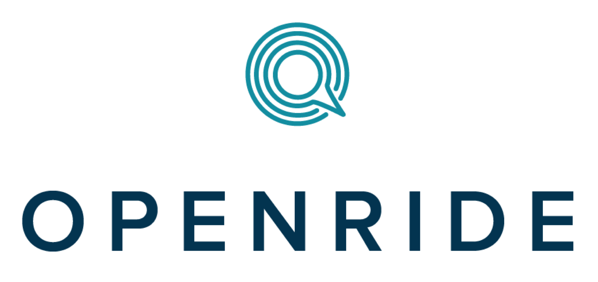

class: middle, center, title  <div class="bluebox"> <h1>customer convos:</h1> <h2>private packages and orgs</h2> </div> --- class: middle, center, logos, title ## 11 participants, 11 questions <div class="whitebox">  <img src="public/img/slack.png"/> <img src="public/img/mapbox.jpg"/> </div> --- class: middle, center, question <div class="bluebox"> <h2>1. Hi! Can you state your name and what you do?</h2> <h2>2. How's your day going?</h2> </div> --- class: middle, center, question <div class="bluebox"> <h2>3. Tell me the story of npm at your company. What specific problem did you have that private packages and orgs solved?</h2> </div> --- class: left, middle > ...[W]e previously had to add partners to our BitBucket account so that we include our packages in their software, this wasn't the best way of doing things and didn't work very well as we got further on and wanting to release more versions of everything. > By using private packages we were able to provide these partners access to the versioned set of modules on NPM ### Fabian Cook, Shipper NZ --- class: left, middle > We've been node/react server/client since day 1, so we naturally used npm to manage dependencies. Private npm packages let us move code outside our private monorepo, so client and server could depend on specific versions, de-coupling library development from synchronization with the app. ### Phil Schleihauf, OpenRide --- class: left, middle > Mapbox adopted nodejs as the base of a lot of projects early on so npm has always been important to publishing and deployment, but there are also private, usually security related tools that need to end up on the same servers as product code that we can't publish to npm... ### Karen Shea, MapBox --- class: left, middle > We had developed internal infrastructure for publishing and distributing these private modules, but having them available through npm the same way as public modules is much more convenient because of semver support and less overhead to onboard new team members, i.e. new people only have to learn npm (or not, if they were already familiar!) rather than npm and our internal system. ### Karen Shea, MapBox --- class: left, middle > Our product are two mobile apps, for iOS and Android. We write some logic in JavaScript, so that we don't have to do it twice on both platforms and can share it. Using a real package manager to handle that, instead of someone going from time to time "hey, we should maybe update the JS in the apps, huh" is pretty nice :) ### Jan Klausa, Clue --- class: middle, center, question <div class="bluebox"> <h2>4. Can you tell us a story about a specific package you wanted to make that private packages really enabled you to do?</h2> --- class: left, middle > We wrote our own testing framework. The intent was to open-source it eventually, but keeping it private let us design it in private, slack on documentation, not fix bugs, etc., until we had a solid design to clean up and release publicly. ### Phil Schleihauf, OpenRide --- class: left, middle > The API client. It was just an easier way to allow other projects/teams at the company integrate with an API. ### Rob Tirserio, Remedy Health Media --- class: left, middle > In the Desktop app, we actually use private packages in a somewhat unusual way... ### Paul Betts, Slack --- class: left, middle > [W]e need to ship precompiled versions of our modified WebRTC, and to interface it with Electron, we write a native node module. We found that the easiest way to get that node module to have the versions of WebRTC it needed, was to make WebRTC itself a npm package, so that npm install just pulls everything in correctly and builds the Calls native module. Who knew that npm is a great C++ package system :) ### Paul Betts, Slack --- class: middle, center, question <div class="bluebox"> <h2>5. Does your company do open source? How do you negotiate what you keep private and public? (Feel free to be as vague as you need to be)</h2> </div> --- class: left, middle > Our general rule of thumb is to work in the open from the get-go because it's easier to keep a project open than it is to later open a closed project. However, sometimes in the interest of time, security, or bizness we develop projects privately, too. ### Karen Shea, MapBox --- class: left, middle > Generally, we choose to make things private when they don't make sense for other people - i.e. if it has a change specific to our setup. We don't want people to find a package and think, "Oh, this @slack version must be better / endorsed by Slack!" but instead it's just weird and broken. ### Paul Betts, Slack --- class: left, middle > Yes. We discuss it case-by-case. We're definitely biased toward open-sourcing everything, but we also like to release things that we feel meet a level of quality that we're happy with, and things that we intend to maintain. ### Phil Schleihauf, OpenRide --- class: middle, center, question <div class="bluebox"> <h2>6. To people who are unsure what they could use private packages for- how would you explain the use case?</h2> </div> --- class: middle, left > I think the main use case is sharing your work privately with no hidden costs like infrastructure maintenance. It's also nice to know I can easily open source a project any time by flipping a button. ### Maximilian Antoni, JavaScript Studio --- class: middle, left > Security, for platform infrastructure and user privacy, but with the convenience of open project management. Sharing source code for a cool shader is one thing, sharing a project that is a wrapper around cloud provider account access is another. ### Karen Shea, MapBox --- class: middle, left > In an organization where you have multiple projects sharing dependencies that shouldn’t be public (for any reason, including legal issues), it just makes sense to build those dependencies just like “normal” ones, and limit access to them so they’re not public, but still work with the toolchain. ### Revin Guillen, EllieMae, Inc --- class: middle, left > To me, the killer use-case is code reuse. Moving shared code to a library vastly decreases friction around updating that library -- it can have its own fast CI, its own releases whenever it wants, and app code can upgrade to the latest version at leisure. It's nice to be able to get that for code that's not suitable for open-source, whether because it's too domain-specific, just-not-ready, or whatever. ### Phil Schleihauf, OpenRide --- class: middle, center, question <div class="bluebox"> <h2>7. How's it going? How's the day to day experience of using private packages/orgs?</h2> </div> --- class: middle, left > We don’t have a ton so manage to it's pretty easy. It's nice to only have to tell everyone a version number to change in their project when new changes go out. ### Rob Tirserio, Remedy Health Media --- class: middle, left > Once we got internal docs written on how to get people using them it's been a smooth ride. ### Karen Shea, MapBox --- class: middle, left > Honestly, it needs work here, but that’s entirely self-inflicted. Because not everyone fully 1) understands, or 2) buys into Full Semver™, there’s a history of people introducing breaking changes in minor (or even patch!) versions, or running two concurrent major versions that each are only compatible with one particular consuming app, or lots of issues like that. ### Revin Guillen, EllieMae, Inc --- class: middle, left > I have open source projects I contribute to on the same laptop as my work projects, so managing my two different npm logins can be kind of finicky. I usually end up copying around the .npmrc from each work project; some are maintained by a shared npm account, some are maintained by my own @elliemae npm org account, and it’s not always clear to me which ones will work where. ### Revin Guillen, EllieMae, Inc --- class: middle, left > Good. There is friction -- new devs need to have npm accounts and permissions have to be set up for them. CI and build pipelines need to log in to pull the private dependencies, which required some hacks when we set it up. But those are all fixed-cost (or per-dev) items, and the benefits are worth it. ### Phil Schleihauf, OpenRide --- class: middle, left > Going pretty good, had a couple of hiccups were I have accidentally made a private package public, apart from that its been good. ### Fabian Cook, Shipper NZ --- class: middle, left > It's 100% reliable. I never had a single service issue. It just works™. ### Maximilian Antoni, JavaScript Studio --- class: middle, center, question <div class="bluebox"> <h2>8. How would you see the product improved or expanded in the future?</h2> </div> --- class: middle, left > This may already exist in a simpler form and only needs me to go looking for it, but managing multiple logins (and possibly even multiple registries) on a per-project basis easily would be nice. ### Revin Guillen, EllieMae, Inc --- class: middle, left > It'd be cool to think about how to support the "Temporary scoped package to work around PR" workflow ...Might be a little too heavy for npm, inc to do, but thinking about that use-case of "scoped packages for temporary forks, that go away after awhile" would be something to explore. ### Paul Betts, Slack --- class: middle, left > i have few nitpicks about the web interface (getting to the private package takes way to many clicks and i'd love to see a version history), but otherwise i can't say i've noticed any problems ### Jan Klausa, Clue --- class: middle, left > oh; there was an issue earlier this year when the person who set up the org left the company. I remember people complaining about the process of transferring the ownership being a PITA, but I wasn't super involved with that so I don't really remember the specifics :( ### Jan Klausa, Clue --- class: middle, left > Maybe anti-user-error fallbacks, for when private projects accidentally get published publicly! ### Karen Shea, MapBox --- class: middle, left > We have "private" in the package.json files, would be good to have "protected" or something along the lines were we can only publish it as private ### Fabian Cook, Shipper NZ --- class: middle, left > Being able to get more info from the org packages list page would be nice. I do appreciate the simplicity of the site ease of releasing/updating modules. ### Rob Tirserio, Remedy Health Media --- class: middle, left > A nice feature would be notifications, like desktop notifications or Slack integration. If someone publishes a module in my org, I'd like to be notified. ### Maximilian Antoni, JavaScript Studio --- class: middle, center, question <div class="bluebox"> <h2>9. Would you recommend that another org or company use private packages or orgs and why?</h2> </div> --- class: middle, left > Of course, if you need them they work great, and they don't have the weirdo problems that pinning to git revisions have like certain npm scripts not running. ### Paul Betts, Slack --- class: middle, left > yes; "please stop copy-pasting files between repos" ### Jan Klausa, Clue --- class: middle, left > Yes, absolutely. One of my biggest development philosophies is to choose tools that work with the grain of how you want to work, and work with the grain of your tools. npm based workflow is a successful model, so if you can’t make all your code public, it’s the perfect way to still use your nice tools without jumping through unnecessary hoops. ### Revin Guillen, EllieMae, Inc --- class: middle, left > I would recommend everyone to use npm and modules in general. Keeping things small and focused makes things easier to manage and maintain. It also increases the chance that something is identified as a candidate to be released to the community. ### Rob Tirserio, Remedy Health Media --- class: middle, left > Definitely, I've used them with 4 companies now, its been great, no reason not to use them. ### Fabian Cook, Shipper NZ --- class: middle, center, question <div class="bluebox"> <h2>10. Any questions I didn't ask that you wish I did? Please ask/answer them here!</h2> </div> --- class: middle, left > Q: What's the difference between a hippo and a zippo? A: One's really heavy, the other is a little lighter. ### Phil Schleihauf, OpenRide --- class: middle, left > Nope, we're a fairly non-trivial project and npm's CLI and package system has always had an answer for everything we've thrown at it, including per-platform packages. It's really great. ### Paul Betts, Slack --- class: middle, center, question <div class="bluebox"> <h2>11. Any cool npm stuff your company has done publicly that you'd like to promote?</h2> </div> --- class: middle, left > Our only significant open source module is contentpull https://www.npmjs.com/package/contentpull which started as an internal module and we decided to release it. Its just a wrapper for the Contentful CMS but we rely on it heavily. ### Rob Tierso, Remedy Health Media --- class: middle, left > I wish there were things I can put out there at this time, we are still learning the ropes in our industry, trying to get through it all! ### Fabian Cook, Shipper NZ --- class: middle, center, title <div class="bluebox"> <h1>tl;dr people <3 npm</h1> </div>